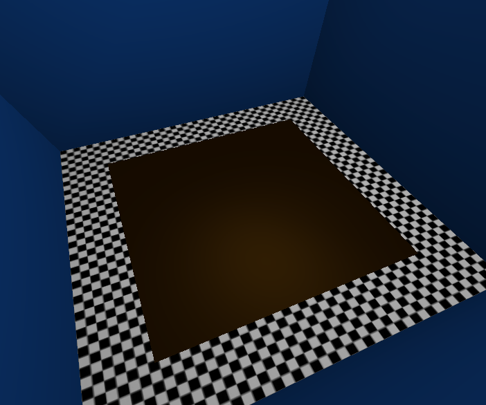
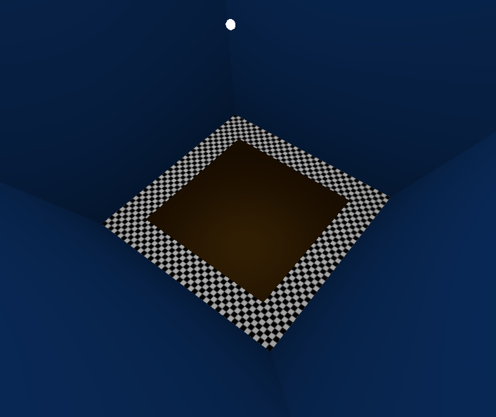

wood.cpp has been written by Sean McKenna to implement a realistic wood shading model BRDF (bidirectional reflectance distribution function).
The GUI is the basic window and environment used in all other assignments for this course. The object is a simple, thin "slab" of wood, currently just a plain-brown-colored surface. The object and light can both be moved.
Moving the light or rotating the camera will show how the reflected highlight moves on the wooden surface, as can be seen in the images on this page. The keyboard button 'w' will toggle between the wood shading model and a simple Phong shading model. By default, it is set to the wooden shading model for the wooden object. The Phong shader is also used for the floor and walls.
At this stage in the project, the BRDF has been coded into the wood shaders (wood.frag & wood.vert). The main file for the BRDF is in wood.frag. It is based on the shader that produced the final images in the paper, linked above.
All the shader code matches what has been presented in Section 4 of the paper, the "Shading Model for Wood." This specifically applies to finished wood, where light refracts and reflects off the coated surface and inside of the surface as well. Those two pieces (surface & sub-surface) are the fundamental components of the BRDF.
Interestingly, the implementation of the shader used for the paper renderings was "wrong." I emailed the first author on the paper (Dr. Marschner at Cornell University), and pointed out an error in a piece of code they had used for the normalized Gaussian distribution. He stated in his email that the only real resulting difference was a change in one of the other variables for generating the highlighted surface, but nonetheless, I have fixed this normalized Gaussian distribution in my shader implementation.
The final project will add more interaction with the BRDF and render a more realistic piece of wood. I will have several more features added to the GUI, to be able to adjust several variables used in the wood shading BRDF model. Textures will be added to the wood to better simulate real wood. I would like to also implement automatic detection from a texture for the fiber direction and several other BRDF variables, all from textures. This will add to the realism that the original authors achieved, since it would use their same data that was published online. Additionally, the wood will automatically show the moving highlight, as if the wooden slab was on a rotating platform or the camera was rotating about the scene. Lastly, I think there is a need to make the cone-shaped highlights really pop out, so adding noise or bump-mapping to the thin slab of wood will also be attempted.